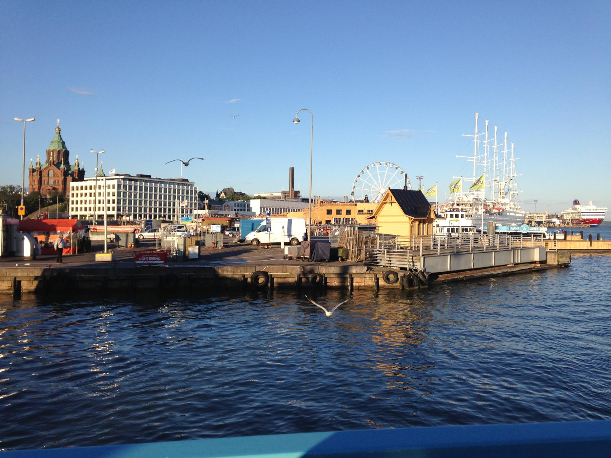
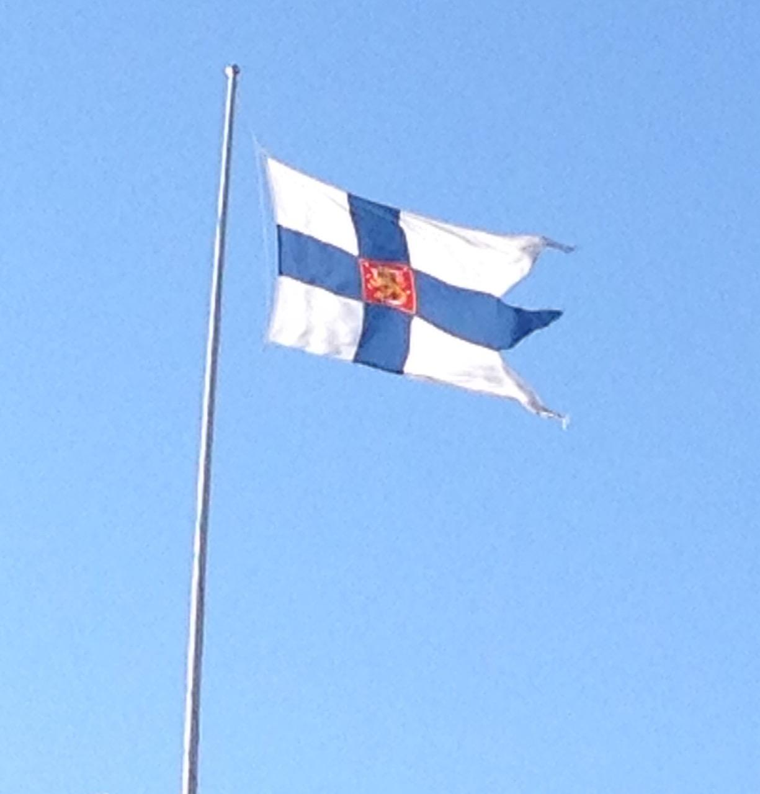
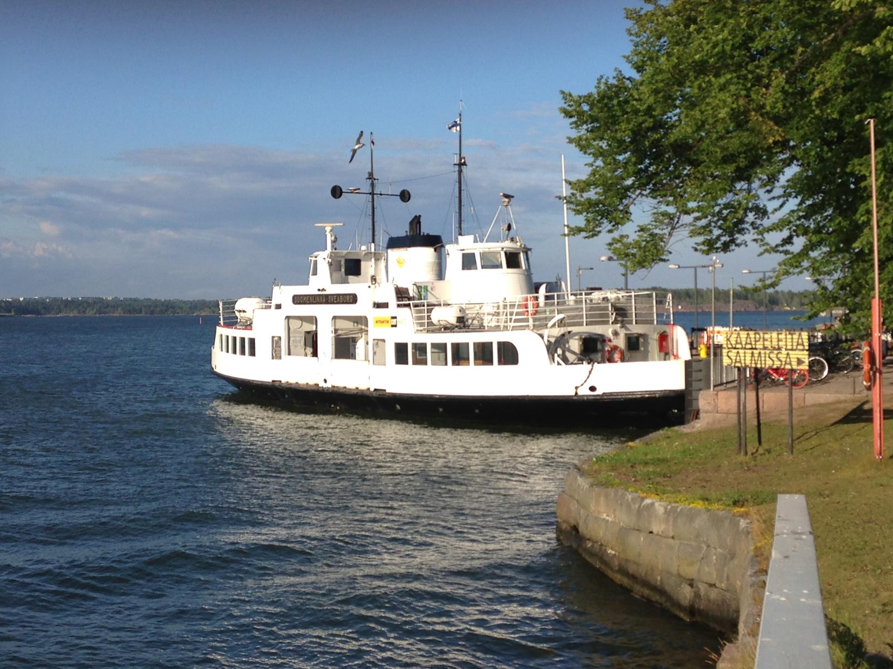
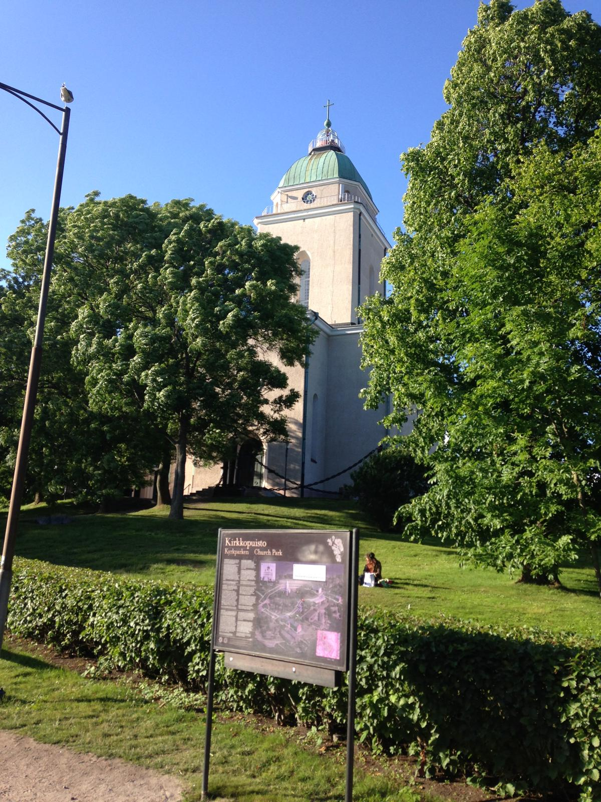
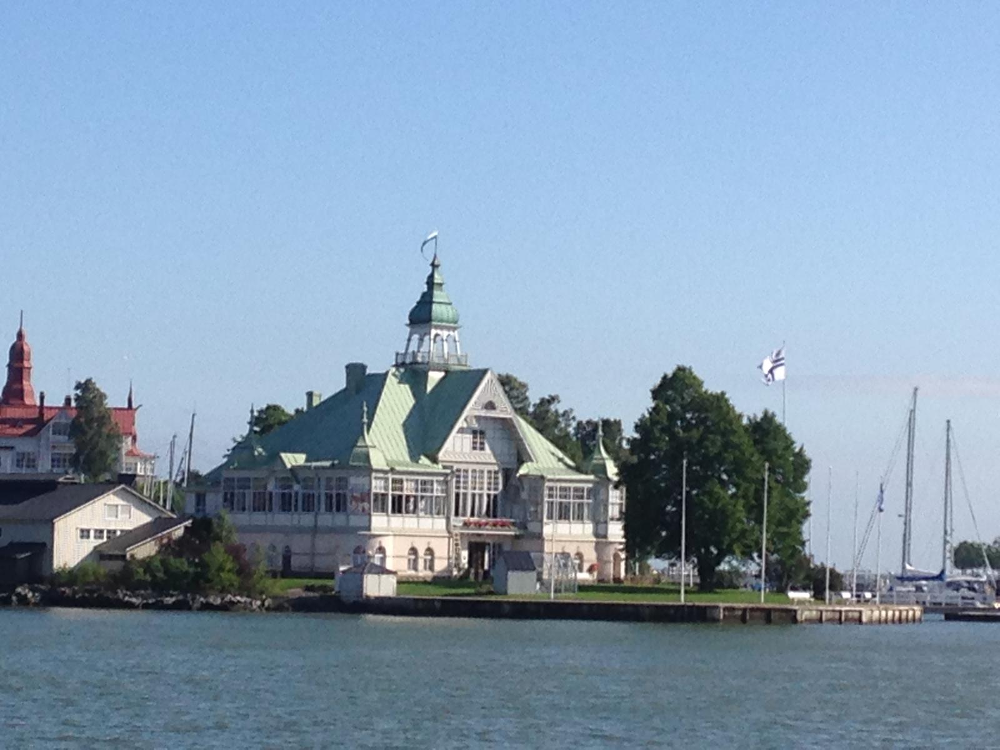
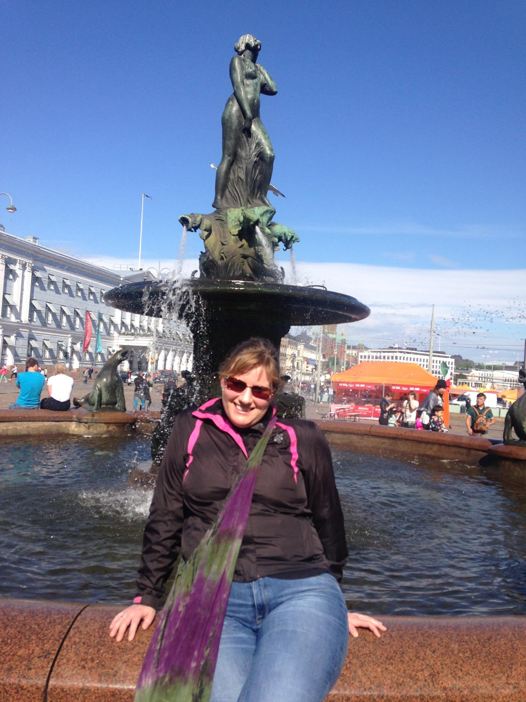
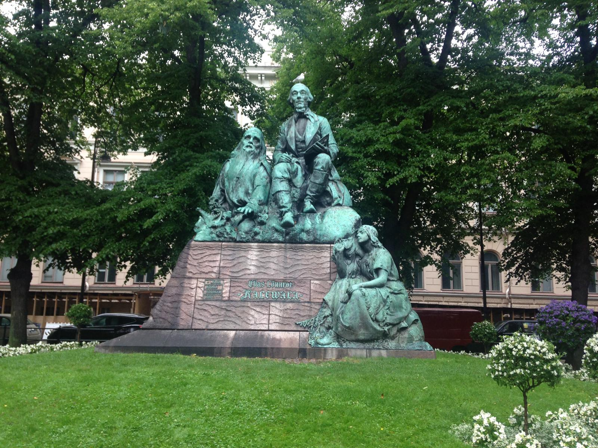
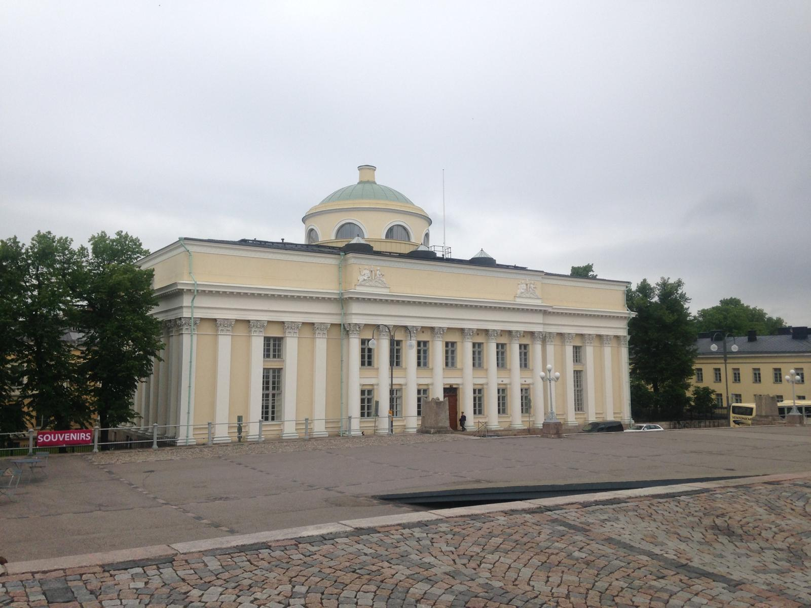

In 2017 Nicola stopped in Helsinki for two days en route to Russia on a group tour — and the Finnish capital made an immediate and lasting impression. Quieter and more spacious than most European capitals, beautifully situated on the Baltic Sea, with a distinctive Nordic character that felt unlike anywhere else she'd visited. Oh — and her luggage got lost on her birthday. She got it back the next day. The reindeer burger did not get a second chance.
Nicola arrived in Helsinki in 2017 as the first stop on a group tour that would eventually take her to Russia — and the two days in the Finnish capital turned out to be a highlight of the whole trip in their own right. Helsinki sits at the crossroads of Western and Eastern European culture in a way that you feel immediately — in the architecture, the food, the atmosphere, the way the city holds itself.
It is not a loud city. Helsinki is Nordic in the truest sense — clean, orderly, thoughtfully designed, with a respect for space and quiet that comes as a genuine relief after the bustle of more obviously tourist-heavy European destinations. The harbours in particular were beautiful — the sea light, the ferries, the market square right on the waterfront — a city that has made the most of its extraordinary coastal setting.


Helsinki's most extraordinary building — a church built directly into solid granite bedrock, with a stunning circular copper dome and rock walls that give the interior incredible acoustics. One of the great pieces of 20th century architecture anywhere in Europe. Genuinely unmissable.
Helsinki's harbours were one of the highlights of the visit — beautiful Baltic Sea light, the famous Market Square right on the waterfront, ferry boats, fresh fish and the city laid out around the water in a way that makes you want to just sit and look. One of the finest harbour settings in Northern Europe.
The extraordinary abstract monument to Finland's greatest composer Jean Sibelius — a cluster of over 600 hollow steel pipes that looks unlike any other memorial you've ever seen. Situated in a park near the seafront, it is one of Helsinki's most photographed landmarks.
Helsinki's main boulevard — named after the Finnish military commander and statesman Carl Gustaf Emil Mannerheim. The Parliament Building, the Finlandia Hall and several of the city's finest museums line this impressive central avenue.
Alvar Aalto's iconic concert and conference hall on the shores of Töölönlahti Bay — one of the great works of Finnish modernist architecture. Even from the outside it is a beautiful building worth seeking out.
Helsinki has a brilliant food scene — fresh Baltic fish at the harbour market, Finnish rye bread, cloudberries, and yes — reindeer on the menu in several restaurants. Traditional Finnish food is hearty, seasonal and genuinely interesting. Whether you eat the reindeer is entirely up to you.






Helsinki is just one side of Finland. Head north and you enter an entirely different world — Finnish Lapland, one of the most magical destinations in Europe. Reindeer herding, husky safaris, snowmobile adventures, the Northern Lights dancing across the Arctic sky and the famous glass igloos of Rovaniemi where you can watch the aurora from your bed.
Lapland is one of the fastest growing travel destinations for Irish travellers — increasingly accessible with direct and connecting flights, and offering a genuinely extraordinary experience that is completely unlike anywhere else in Europe. Klook has an excellent range of Lapland experiences worth booking in advance.
Disclosure: If you book through these links we may earn a small commission at no extra cost to you.
Finland combines brilliantly with the other Nordic countries — Norway, Sweden and Denmark — on a wider Scandinavia tour. Helsinki also makes a natural starting point for anyone heading further east. TourRadar has excellent Scandinavia tours covering the region.
Disclosure: Affiliate link — if you book through it we may earn a small commission at no extra cost to you.
Church in the Rock tours, Helsinki harbour cruises, city walking tours, Sibelius monument visits and more.
Disclosure: If you book through these links we may earn a small commission at no extra cost to you.
Nicola visited Helsinki in 2017 as the first stop on a group tour that continued east to Russia — historically one of the most natural travel pairings in Northern Europe. Helsinki and St Petersburg are just a few hours apart and the cultural contrast between the two cities is one of the most striking in European travel.
Common questions
What to pack for Finland
Helsinki summers are warm and pleasant but the evenings can be cool. If you're heading to Lapland in winter, serious thermal layers are absolutely essential — temperatures can drop to -20°C or below.
Even in summer Helsinki evenings can be cool — a good layer keeps you comfortable whether you're at the harbour or exploring the city on foot.
View on Amazon →Helsinki is a very walkable city — the harbour, the Church in the Rock, the Sibelius Monument are all on foot. Good shoes are essential.
View on Amazon →Stay connected in Finland without roaming charges — essential for navigating Helsinki and finding those harbour views.
View on Amazon →Long days exploring and photographing Helsinki's beautiful harbour and landmarks drain batteries fast.
View on Amazon →Finland uses Type F plugs — same as most of continental Europe but different to Ireland. Always pack one.
View on Amazon →Perfect for city days and harbour walks — keeps everything organised and hands free.
View on Amazon →Disclosure: These are Amazon affiliate links. If you buy through them we may earn a small commission at no extra cost to you.
Helsinki is one of Europe's most rewarding and underrated capitals — two days is a great introduction. Book a Scandinavia tour through TourRadar, browse Helsinki experiences on GetYourGuide, or head to Klook for Lapland adventures.
Affiliate disclosure: if you book through our links we may earn a small commission at no cost to you.